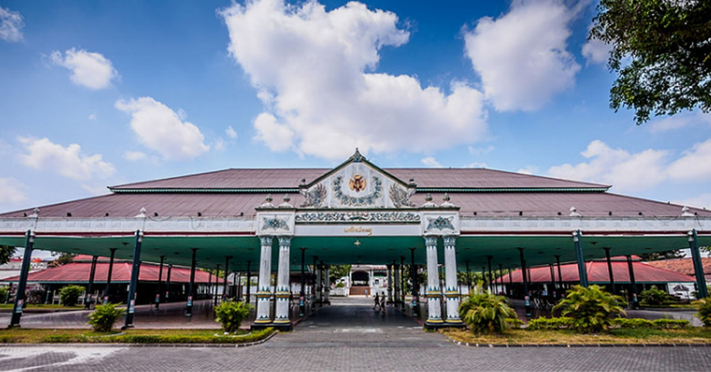

Sejarah

Nama Yogyakarta terambil dari dua kata, yaitu Ayogya atau Ayodhya yang berarti "kedamaian" dan Karta yang berarti
"baik".
Berdirinya kota Yogyakarta tidak lepas dari Perjanjian Giyanti pada Tanggal 13 Februari 1755 yang ditandatangani Kompeni
Belanda di bawah tanda tangan Gubernur Nicholas Hartingh atas nama Gubernur Jenderal Jacob Mossel. Perjanjian tersebut
berisi tentang pembagian wilayah Kesultanan Mataram, dimana wilayah Mataram bagian timur masih menjadi milik Kasunanan
Surakarta Hadiningrat yang kala itu dipimpin oleh Susuhunan Pakubuwana III, dan bagian barat menjadi hak Pangeran
Mangkubumi. Wilayah tersebut dibatasi oleh Sungai Opak. Pangeran Mangkubumi pun diakui menjadi Raja pada wilayah
tersebut dengan Gelar Ngarsa Dalem Sampeyan Dalem Ingkang Sinuwun Kanjeng Sultan Hamengku Buwana Senopati Ing Ngalaga
Abdul Rahman Sayidin Panatagama Khalifatullah. Pangeran Mangkubumi yang bergelar Sultan Hamengkubuwana I segera
menetapkan bahwa Daerah Mataram yang ada di dalam kekuasaannya itu diberi nama "Nagari Ngayogyakarta Hadiningrat",
sebulan setelah penandatanganan Perjanjian Giyanti.
Geografis

Letak Kota Yogyakarta dilalui oleh tiga sungai, yaitu Sungai Winongo, Sungai Gajahwong dan Sungai Code. Sungai Winongo
berada di bagian barat Kota Yogyakarta, sedangkan Sungai Gajahwong berada di bagian timur. Sementara Sungai Code berada
di tengah Kota Yogyakarta. Keberadaan Sungai Code membelah Kota Yogyakarta menjadi dua bagian. Kota ini terletak pada
jarak 600 KM dari Jakarta, 116 KM dari Semarang, dan 65 KM dari Surakarta, pada jalur persimpangan
Bandung–Semarang–Surabaya–Pacitan. Kota ini memiliki ketinggian sekitar 112 m dpl.
Meski terletak di lembah, kota ini jarang mengalami banjir karena sistem drainase yang tertata rapi yang dibangun oleh
pemerintah kolonial, ditambah dengan giatnya penambahan saluran air yang dikerjakan oleh Pemkot Yogyakarta.
Wisata
Pariwisata merupakan salah satu sektor penting di Kota Yogyakarta. Sejak dahulu, Kota Yogyakarta menjadi salah satu
tujuan wisata utama di Indonesia dan menjadi andalan pariwisata Indonesia, bersama dengan Bali. Pada Januari 2022,
tercatat 780.000 wisatawan berkunjung ke Kota Yogyakarta.
Malioboro

Yogyakarta juga memiliki beberapa kawasan khusus untuk wisata pejalan kaki. Penataan kawasan wisata khusus pejalan kaki
dimulai di jalan Malioboro pada tahun 2016 hingga 2018, kemudian dilanjutkan dengan penataan kawasan khusus pejalan kaki
di sekitar Kotabaru dan Jalan Jenderal Sudirman pada 2019 hingga 2021.
Candi Prambanan
Candi Prambanan merupakan candi Hindu yang terbesar di Indonesia. Sampai saat ini belum dapat dipastikan kapan candi ini
dibangun dan atas perintah siapa, namun kuat dugaan bahwa Candi Prambanan dibangun sekitar pertengahan abad ke-9 oleh
raja dari Wangsa Sanjaya, yaitu Raja Balitung Maha Sambu. Dugaan tersebut didasarkan pada isi Prasasti Syiwagrha yang
ditemukan di sekitar Prambanan dan saat ini tersimpan di Museum Nasional di Jakarta. Prasasti berangka tahun 778 Saka
(856 M) ini ditulis pada masa pemerintahan Rakai Pikatan.